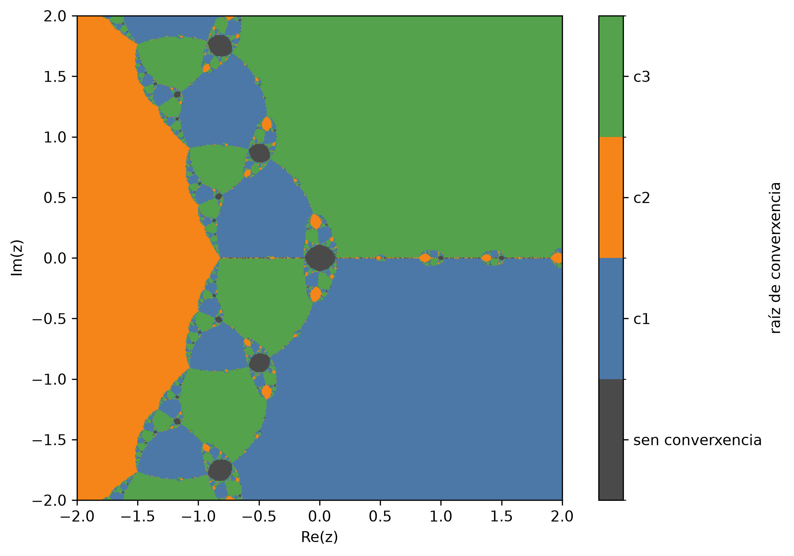
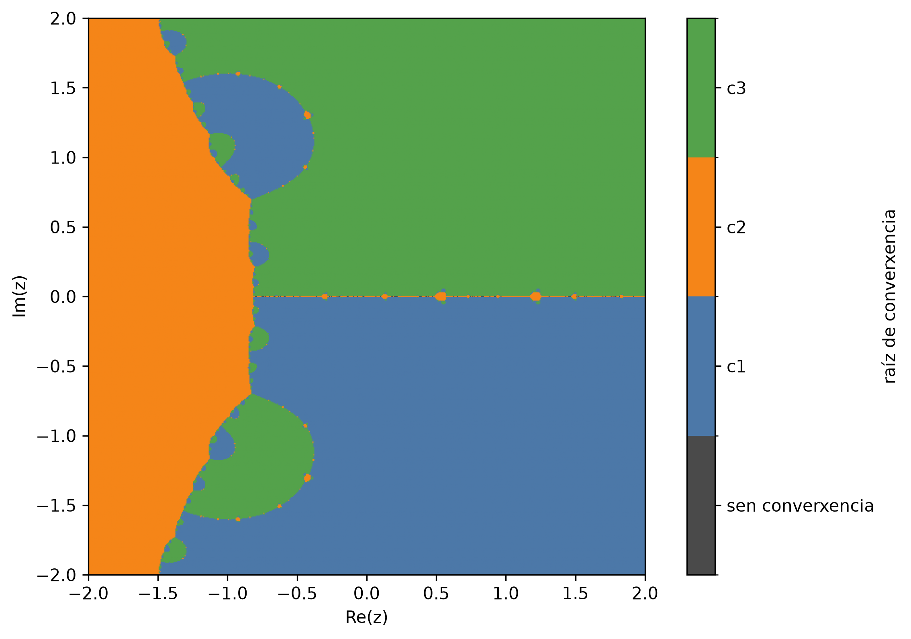
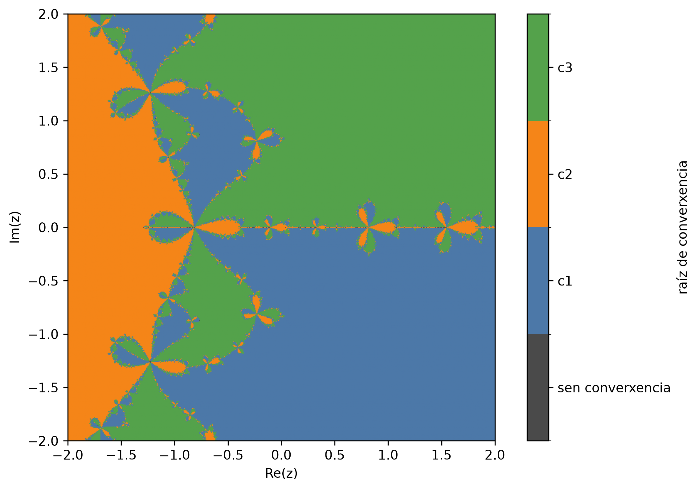

Métodos iterativos
e fractais complexos
Newton · Halley · Chebyshev sobre f(z) = z³ − 2z + 2
Método
Tres iteracións, tres funcións g(z), unha soa función.
Results
7,02 · 3,98 · 5,28 iteracións de media nunha malla 601 × 601.
Defensa
Raíces simples, polos de g e concas irregulares.
→ ou Espazo para avanzar · H para axuda
Que queremos conseguir
- Aproximar raíces dunha función complexa por iteración.
- Entender que é unha conca de atracción e por que a fronteira é fractal.
- Comparar Newton, Halley e Chebyshev coa mesma f.
- Obter tres imaxes orixinais, nítidas e xustificadas.
import sympy as sp
z = sp.Symbol('z')
f = z**3 - 2*z + 2
df = sp.diff(f, z) # 3z²-2
A tanxente como motor
Deducción
Taylor de orde 1: 0 = f(xₙ) + f′(xₙ)(c − xₙ). Despexando c e substituíndoo pola seguinte aproximación.
xₙ₊₁ = xₙ − f(xₙ)/f′(xₙ)
Xeometricamente: o corte da tanxente co eixo OX. Orde 2 para raíz simple.
g = simplify(z - f/derf)
# g(z) = 2(z³-1)/(3z²-2)
gg = lambdify(z, g, "numpy")
z = gg(z) # un paso
Curvatura e aproximante racional
Historia e fórmula
Edmond Halley (1656–1742), astrónomo inglés, publicou o método a finais do sé XVII. Hoxe é o aproximante de Padé (1,1) da inversa.
xₙ₊₁ = xₙ − 2ff′ / (2f′² − ff″)
Usa a hipérbola osculatriz: non só a pendente, tamén f″. Orde 3 para raíz simple.
derf2 = sp.diff(f, z, 2)
g = simplify(z - (2*f*derf)
/ (2*derf**2 - f*derf2))
# 99,69 % converge en <10 pasos
A parábola osculatriz
Fórmula
xₙ₊₁ = xₙ − f/f′ − f″f²/(2f′³)
Corrección polinómica engadida ao paso de Newton. Intersección do eixo OX coa parábola osculatriz en (xₙ, f(xₙ)).
Mesma orde 3 ca Halley, natureza distinta: polinomio fronte a racional.
g = simplify(z - f/derf
- derf2*f**2/(2*derf**3))
# media 5,28 iteracións
z³ − 2z + 2
Raíces
−1,769292
0,884646 ± 0,589743i
Tres raíces simples, sen simetría rotacional.
Derivadas
f′ = 3z² − 2
f″ = 6z
SymPy simplifica sen problemas.
A guarda
f′ se anula en ±0,816497. Alí g ten polos; abs(g(z)) < 1/tol corta a iteración.
Ao ser polinomio, non hai cortes de rama: só os polos de g explican os puntos illados.
Tres concas, tres métodos



Mesma ventá [−2, 2] × [−2, 2], malla 601 × 601, unha cor por raíz, 300 dpi.
Os números, sen adornos
| Método | Orde | Media | <10 pasos |
|---|---|---|---|
| Newton | 2 | 7,02 | 86,45 % |
| Halley | 3 | 3,98 | 99,69 % |
| Chebyshev | 3 | 5,28 | 93,04 % |
Converxencia en menos de 10 pasos
Newton 86,45 %
Halley 99,69 %
Chebyshev 93,04 %
A orde teórica non decide o resultado: importan a forma das concas e os polos de g.
O que se pode defender
- As tres fórmulas son correctas e están verificadas con SymPy.
- Halley foi o máis rápido nesta función e nesta ventá.
- As raíces son simples, pero os polos de g en ±0,816497 condicionan a imaxe.
- As tres concas teñen tamaños e formas distintos: non hai repetición radial.
- Bibliografía: Varona [1], [2], 3B1B [3], Gleick [4].
Preguntas que poden caer
- Por que f′(0) non se anula e que significa iso?
- Onde están os polos de g e que fai a guarda?
- Halley ten orde 3: por que non sempre é o máis rápido?
python Newton.py
python Halley.py
python Chebyshev.py
# saída: imaxes/fractal_*.png
Grazas. Preguntas.